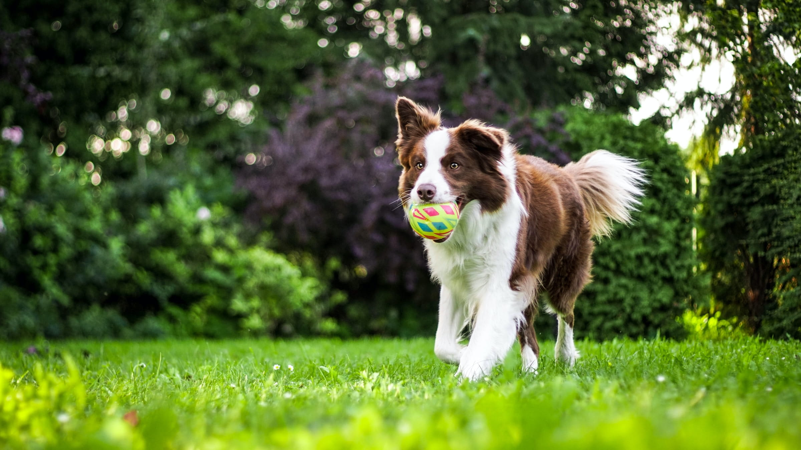

Sobre nosotros.
En ‘AMIGOS ANIMALES’, nos apasiona el bienestar de tus mascotas. Fundada en 2023 por el Dr. Juan Pérez, un veterinario con mucha experiencia, nos esforzamos por proporcionar un cuidado excepcional para tus amigos peludos. Creemos en tratar a cada mascota como si fuera nuestra propia familia, y nos enorgullece ofrecer una variedad de servicios y productos para satisfacer las necesidades únicas de cada animal.
¿Necesitas que te contactemos?
Si necesitas que te contactemos, no dudes en llenar el siguiente formulario.
Novedades
Para celebrar Halloween, te espera una gran sorpresa con un descuento espeluznante del 15% en todos los servicios y productos durante la última semana de octubre y primera de noviembre.
¡Tu mascota estará lista para las fiestas!
Del 1 al 31 de diciembre de 2023
En la Clínica Veterinaria Navidad queremos que tu mascota disfrute de unas felices fiestas, por eso te ofrecemos un 20% de descuento en todos los servicios.
Servicios.
Consulta médica
Ofrecemos consultas médicas especializadas para animales de todas las edades y razas. Nuestros veterinarios altamente capacitados realizarán exámenes físicos, diagnósticos y brindarán orientación sobre la salud y el bienestar de su mascota.
Vacunación y Prevención
Proporcionamos programas de vacunación personalizados para perros, gatos y otros animales. Además, ofrecemos servicios de desparasitación y prevención de enfermedades para mantener a las mascotas protegidas y saludables.
Cirugía Veterinaria
Contamos con un equipo quirúrgico experto y tecnología avanzada para realizar una variedad de procedimientos quirúrgicos, desde esterilizaciones y castraciones hasta cirugías de tejidos blandos y ortopédicas. Garantizamos cuidados postoperatorios óptimos.
Productos
Alimento Premium para Mascotas
Ofrecemos una gama de alimentos premium para perros y gatos, formulados para satisfacer las necesidades nutricionales específicas de cada etapa de la vida. Estos alimentos están hechos con ingredientes de alta calidad para promover la salud y la vitalidad de las mascotas.
Accesorios y Juguetes Interactivos
Disponemos de una amplia variedad de accesorios, desde correas y collares elegantes hasta juguetes interactivos que estimulan la mente y el cuerpo de las mascotas. Estos productos están diseñados para proporcionar entretenimiento y enriquecimiento a los animales.
Productos de Higiene y Cuidado
Ofrecemos productos de higiene como champús suaves, cepillos y productos de limpieza dental para mantener a las mascotas limpias y saludables. También proporcionamos productos de cuidado como camas cómodas y jaulas espaciosas para el descanso adecuado.